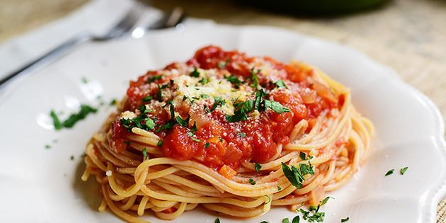

Spaghetti With Marinara Sauce

Description
Marinara (lit. 'sailor') sauce is a tomato sauce usually made with
tomatoes, garlic, herbs, and onions. Variations include capers, olives,
spices, and a dash of wine. Widely used in Italian-American cuisine, it is
known as alla marinara in Italy, where it is typically made with tomatoes,
basil, olive oil, garlic and oregano, but also sometimes olives, capers,
and salted anchovies. It is used for spaghetti and vermicelli, but also
with meat or fish.
Ingredients
- 1 pound spaghetti
- 1 (28 ounce) can crushed tomatoes
- 1 (14.5 ounce) can diced tomatoes
- 1 (15 ounce) can tomato sauce
- 1 tablespoon minced garlic
- 2 teaspoons white sugar
- 2 teaspoons dried parsley
- 1 teaspoon garlic powder
- ½ teaspoon salt
- ¼ teaspoon dried oregano
- ¼ teaspoon dried basil
- ¼ teaspoon ground black pepper
- 1 ½ tablespoons capers
- 1 pinch crushed red pepper flakes (Optional)
Steps
-
In a large saucepan combine crushed tomatoes, diced tomatoes, tomato
sauce, minced garlic, sugar, parsley, garlic powder, salt, oregano,
basil, and ground black pepper. Add capers and crushed red pepper if
desired. Cover. Bring to a boil.
- Lower heat and simmer, with cover, for 45 to 60 minutes.
-
As simmering time nears, in a large pot with boiling salted water cook
spaghetti until al dente.
- Toss spaghetti with cooked sauce. Serve warm.